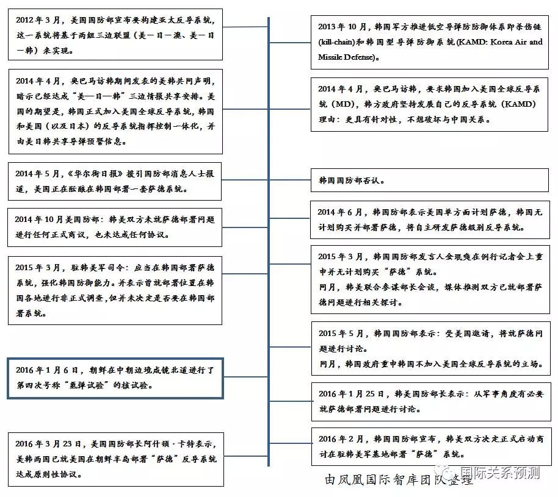
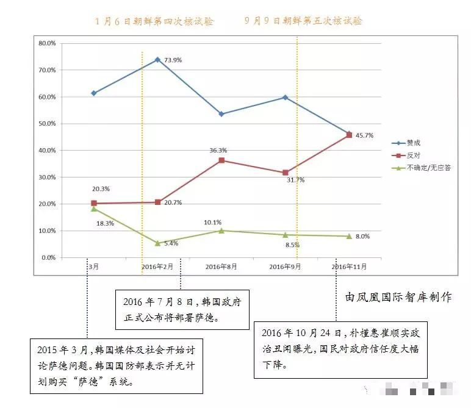
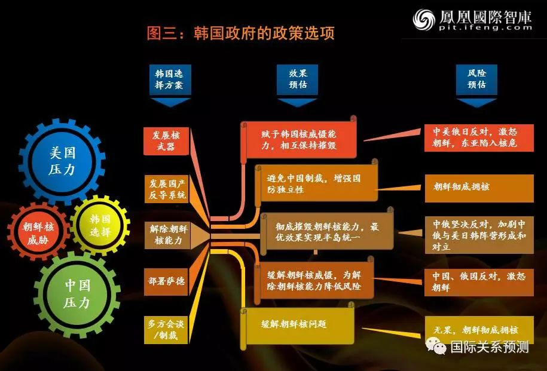

收录于合集
李江、忆贤 为FT中文网撰稿
近日，本文作者之一李江发表的一篇《为什么中国国际关系看起来那么水？》的文章引起了巨大的争议。批评者认为，专家在媒体上发表的言论并不代表其真实水平，真正追求学术的学者往往并不活跃于大众视线。这些批评的声音似乎误解了作者的本意，作者的本意是，中国国际关系学科整体水平令人堪忧，而不是专指那些活跃于媒体的专家。
以“萨德”问题为例，笔者借助知网、维普、百度学术搜索“萨德”相关的学术论文，对媒体上的专家观点也做了大量的整理。令人遗憾的是，笔者难以发现有对“萨德”问题相关博弈主体——中国、韩国、美国、朝鲜在这个过程中如何互动的充分详尽的分析，在每一个阶段也没有对中国政府需要采取何种有效措施应对韩国和美国下一步可能采取的行动的建议。绝大部分专家批评韩美部署“萨德”的行动，但是对韩国部署“萨德”的驱动因素分析却简单得令人吃惊。必须承认的是，由于笔者没有阅读内参的权限，阅读范围仅限于公开材料。
根据凤凰国际智库整理的资料，韩国官方直到2016年1月才公开表示（考虑）部署“萨德”导弹。而在此之前，韩国官方一再公开否认此计划。从笔者掌握的有限资料来看，中国似乎对韩国政府转变立场的原因没有足够重视。这令人感到困惑：如果中国对韩国国内因素没有做足够的研究，是基于什么对其做出评价和预测呢？又是基于什么为中国提出应对方案呢？
中国以现代国际关系研究院为代表的专家以及许多西方国际问题专家做形势预判时，常常借助情景分析法，而兰德公司更是以改良版的系统分析法著称。情景分析法的优势在于可以借助模型对各种结果发生及其可能性做出预测。笔者尝试采用情景分析法对韩国政府的政策选择做一个简单的分析，以求教于方家。
“萨德”博弈中的最大不确定性因素——朝鲜
韩国官方首次公开表示（考虑）部署“萨德”导弹发生在朝鲜第四次核试验之后。虽然中国然指责“萨德”系统将威胁自身国家安全，但也无法否认朝鲜的核威胁是韩国布置“萨德”根本原因。在这次中美韩朝（俄日）博弈当中，朝鲜是最富有不确定性的主体，这也是造成整个东亚地缘政治局势复杂和敏感的根源。
当我们对朝鲜进行分析的时候，必须做出一个前提判断，即朝鲜并不具备真正意义上的国家理性。笔者所这里认为的“国家理性”包括国家行使权力的目标必须具有正当性，也包括国家权力的行使必须具备实现国家利益最大化的最大可能性，也即国家的工具理性。对于一个公权力高度集中的国家来说，统治集团每一项决策判断不仅需要符合目的的正当，同时也需要足够的能力实现这一目标。
显而易见，朝鲜是一个被权力集团俘获的国家。最高理性服务于权力集团利益本身。朝鲜权力集团对政权稳定的诉求，处于核心利益的最高位置，国家的行动必须服务于这一最高目标。在各种诉求当中，当行动背后的国家意志与权力集团诉求一致时，行动则可能符合国家理性，反之则不然。
因此，在国际问题的分析当中，朝鲜作为一个非常不透明的国家，最大的不确定性就在于这个主体每一个行动背后的国家意志与权力集团的意志是否一致，该行动意图究竟是什么？美国容易简单地将朝鲜的行动意图一概归因于权力集团的私欲，这是一种认知谬误。因为在一个极度不透明的国家体制当中，权力集团的内部如何博弈，权力集团的意志如何转化成为国家意志，外人极难知晓。
对客体认知的不确定性，使得具有更高确定性的国家对朝鲜有更大的恶意，因为恶意预设才是最明智的博弈策略。对中美韩（俄日）来说，其各自对朝政策由于建立在对朝鲜认知的不确定性上，因而也充满了不确定性。它们对其他国家的对朝政策也更具有恶意预设的可能性——这里是指中俄与美日韩之间。我们知道，国际关系中各个行动主体的博弈常常走向“纳什均衡”，就是因为一个行动主体由于无法确知另一个行动主体的意图而采取保守策略——恶意预设。而这是各国在朝鲜问题的合作方案上难以达成共识的根本原因。
当然，“习特会”之后，中国与美国似乎在朝核问题上达成了更多的共识，截止到截稿日期后的形势变化，各个博弈主体如何交易与妥协，都影响本文分析的情势背景。但这无损于本文的价值，笔者提供的是一种在特定情势下的博弈模型。
韩国政府放弃对华妥协
我们的团队对韩国官方历次就“萨德”问题发表的关键讲话进行了梳理（如图一），我们发现，韩国官方对“萨德”问题的态度转变发生在朝鲜第四次核试验之后。正如上文所述，韩国官方立场转变的关键时间点是2016年1月13日。
图一：韩美官方“萨德”问题公开立场的关键时间表（2012.03-2016.03）

与公开立场不同的是，韩国官方其实早已评估部署“萨德”系统的可能性。我们掌握的内部资料显示，早在2013年韩国军方在推进低空导弹防防御体系即 “杀伤链”和韩国型导弹防御系统建设时，就曾表示希望美方提供“萨德”系统的相关资料。在此之后，韩国官方也私底下与“萨德”的总承包商洛克希德·马丁公司进行协商——尽管洛克希德·马丁公司否认。
在2016年1月以前，韩国政府拒绝在韩部署“萨德”系统的立场异常坚决。对于韩国而言，作为韩国最大贸易伙伴的中国的反对态度是他们最大的顾虑之一。与此同时，韩国也一直有在国防建设上增强自主性的强烈愿望。那么首尔最佳的行动策略就是发展自己的反导系统，这也是韩国军方一直以来努力的方向。不过，作为一个民族主义情绪强烈的国家，韩国政府会在公开场合避免强调这一妥协策略背后的中国因素，同时也避免激怒韩国民众。然而，这也为日后韩国民众激烈抨击政府政策不透明埋下了隐患。
韩国政府这一计划虽然可以避免激怒中国，但推进起来却并不顺利。韩国军方最棘手的是解决反导技术的问题。我们从美国智库方面获得消息称，美国（奥巴马政府）并不愿意分享反导技术给韩国。即便承诺为韩国提供安全保障，美国对韩国发展自身国防力量以及增强国防自主性的主张，长期以来持有疑虑心理，甚至是反对态度。
对美国而言，最佳的策略是在韩国部署由美国制造的“萨德”系统。不同于美军针对于苏联核威胁的战略防御计划，美国陆军空间与战略防御司令部在1987年提出研发的“萨德”系统主要就是用于应对伊拉克、北朝鲜等小国的导弹威胁。2015年初，美国方面曾对韩国表示，使用“萨德”而非发展自己的反导系统将更有效地避免韩国与朝鲜之间陷入战争。显然，对于美国而言，部署“萨德”既能提高韩国及驻韩美军应对朝鲜核威胁的能力，又能免于因韩国发展自身国防力量而降低对自身依赖的风险。
从2016年前韩美双方的国防议题来看，在“萨德”问题上韩国一定不断遭受美国的压力。朝鲜第四次核试验以后，韩国态度发生根本性变化。随后，国防部长承认韩国反导系统技术有限，宣布在韩国部署“萨德”——但不放弃发展KAMD系统。这意味着，韩国放弃对华妥协。
韩国民众与政党支持“萨德”
在“萨德”问题上，许多中国媒体除了千篇一律地指责韩国，也刻意强调韩国民众如何抗议“萨德”入韩。这种现象背后既有媒体行业众所周知的某些难以违逆的因素，也有部分媒体刻意煽动中国民众非理性情绪以博眼球的因素。这造成了一种假象，即韩国民众反对“萨德”入韩。
我们团队对“萨德”问题主要时间节点（2015年1月至2016年12月）的舆情变化进行观察。为此，我们结合韩国现代经济研究院和其它韩国主流媒体所做的民调进行分析，发现几个特点：第一，从2015年以来多数时期韩国民众支持部署“萨德”的意见占多数（见图二）。第二，2016年11月反对部署“萨德”民众达到高峰，与支持民众持平（见图二）。韩国政府立场并未因此动摇。第三，对部署“萨德”的反对意见进行具体分析，我们发现当中最主要的反对原因是民众对政府政策不透明的反感或对政府的不信任，这种不信任在韩国前总统朴槿惠“闺蜜门”事件中达到顶峰。第四，反对声音大多集中在受“萨德”直接影响的星州地区。
图二：韩国民众对部署”萨德”的态度

注：本图根据韩国现代经济研究院公布的五次问卷调查结果制作。
在“萨德”问题上，韩国政府一直都遭受到了巨大的舆论压力。这对一个民主国家来说尤为困难，许多议员因难以顶住选区民众压力而改变立场。去年八月，我们在一份内部报告中对韩国各主要政党对“萨德”态度进行详细地分析。
作为执政党的新国家党在2016年以前党内成员在“萨德”问题上存在内部分歧，朝鲜第四次核试验后，党内成员纷纷表示赞成部署“萨德”。不过，也有少部分新国家党议员因担心选票，反对将“萨德”部署在自己的选区，星州地区就有1151名新国家党党员退出本党。
而韩国第一大在野党共同民主党对于部署“萨德”的态度一直模糊不清，内部意见存在差异，部分议员由于顾及中韩关系、俄韩关系反对部署“萨德”，也有一部分议员考虑到美韩关系以及国家安全问题而保持模糊不定的态度。而时下韩国大选热门候选人文在寅则是“模糊战略”的典型代表，他主张部署“萨德”问题应该留给下一任政府，如果现任政府强行部署“萨德”，他将会支持共同民主党的主张：要求宪法法院做出权限争议审判。不过，为了争取选票，文在寅的观点模糊中也有倾向性，在4月11日发表的声明谴责中国在朝核问题的不作为。
韩国第二大在野党国民之党对政府部署“萨德”持最强烈的批评意见。该党基本主张部署“萨德”需要经过国会同意，要求政府撤销部署“萨德”的决定。不过，同样基于选票的需要，作为热门总统候选人的安哲秀则直接表示支持部署“萨德”。
强大的民意在很大程度上影响了韩国政府对待“萨德”的立场。韩国第四次核试验之前，朴槿惠政府还可以应对民众的压力，自试验之后，韩国民众对政府的“软弱”态度强烈不满，且适逢朴槿惠本人丑闻爆发，如此汹汹民意必定令一个处于敏感时期的政府举步维艰。
韩国政府还有选择吗？
如果以韩国政府的视角做情景分析，我们会发现政策选择空间并不大。在做情景分析之前，需要明确的前提条件是，正如上文所言，朝鲜是一个高度不确定的国家。对于韩国而言，朝鲜核威胁持续存在且风险日益提升，首尔必须做好最坏打算，即朝鲜对韩实施核打击。有些中国学者认为，朝鲜不会对韩国实施核打击。他们似乎忽略了，当一个行动主体面对不确定且致命的危险时，这个行动主体一定会考虑万一受到攻击怎么办，而不是分析风险系数从而理性制定应对方案，因为前者才是一种生存的本能反应。在东亚地缘政治格局当中，现实主义所谓的“自助困境”基本适用。韩国政府必须在自助困境当中选择出令国际和国内都能接受、或者说最不反对的政策。
笔者试图对韩国政府的六种主要政策选项进行分析（见图三）。在六方会谈彻底破产以后，韩国政府最优的选择是在发展自身反导系统同时配合国际社会采取制裁措施。然而，在朝鲜第四次核试验之后，韩国政府和民众彻底对制裁失去信心。韩国认为中国没有完全贯彻制裁朝鲜的承诺，朴槿惠政府在国内饱受指责，朴槿惠本人也为此付出了极大的政治代价。
朴槿惠上台以后，一直寄希望于中国来解决朝核问题和朝鲜问题，甚至不顾美日以及国内保守派强烈发对，参加中国2015年举办的70周年大阅兵，以及加入亚洲基础设施投资银行（AIIB），这也是朴槿惠执政上半期为数不多的亮点，即在巩固韩美同盟的同时，强化与中国的关系。而此时，韩中关系也被韩国媒体炒作为史上最好的中韩关系，韩国国内的民意和舆论寄希望于搭乘中国经济发展快车的同时，对中国在朝核问题和半岛统一问题发挥更大作用的期待达到最高值。
但是，韩国政府和国民事后认为中国没能达到预期，朴槿惠则被保守派质疑一味讨好中国却没有任何效果，虽然中国积极参与了对朝制裁“2270号”决议，但韩国认为中国仍旧是制裁的漏洞，在执行制裁时存在很多灰色空间。朴槿惠“闺蜜门”事件爆出之后，执政党分为了“自由韩国党”和“正党”两个党，两个党在包括如何处理朴槿惠等内政问题上存在众多分歧，而在“萨德”问题上却空前的一致，即主张尽快部署“萨德”。
此外，韩国再反观自身反导技术研发进展缓慢，那么是否能在朝鲜完成拥核前部署韩国自产的反导系统，已不是一个成功概率的问题，而是一个风险大小的问题。在这种情势之下，韩国政府的安全需求处于最优先地位，这也是韩国后来不为中国经济制裁措施所动的主要原因。
图三：韩国政府的六种主要政策选项

其实，无论我们将时间点定位在朝鲜第四次核试验以前，还是更早，韩国面对朝鲜核威胁所能选择的空间都极其狭小。唯一不同的是，在对中国失望以后，韩国国内对于更激进的行动如发展核武器以及军事打击朝鲜的主张拥有了更大的支持。不过，对于韩国政府而言，这两项选择的风险性巨大，代价也会极为昂贵。这也是为什么支持率最高的三位候选人都回避该主张的原因。当韩国对所有的政策选项逐一排除之后，以最小的风险取得最好预估效果的政策只有引进“萨德”一项。这也就解释了为什么韩国政府在“萨德”问题上会“突然”转变立场。
余论
上述分析是一个基于高度简化的分析模型，实际上，情景分析方法对情报和模型的要求都极高。尽管笔者水平有限——因为我们不是专家，但我们依然真诚地希望中国的智库和高校在分析国际问题时能运用更为科学的模型，站在更为中立的立场，只有如此，才能清醒地洞悉事实和形势。
试想，如果中国不对对手进行系统的客观分析，又如何制定出更有效地应对方案呢？如果中国能在朝鲜第四次核试验之前，采取更有效的措施取得韩国民众和政府的信任，中国也不至于像现在这样，面临更小的政策选择空间，更高风险和成本的政策选项。在一定程度上，许多国际关系专家是失职的。
其实，笔者并非不知专家身不由己，面对一个封闭系统，中国知识分子并不享有宽松的言路。体制对不同声音缺乏足够的容忍空间，使得学术界和智库界“劣币驱逐良币”的现象越来越严重，真诚和优秀的研究成果越来越稀缺，曲意逢迎之作越来越多。在中国，知识分子早已被驯服，为改变这一现状，政策制定者对自己应更有信心才是。
（附记：凤凰国际智库研究助理陈俊彦、张添之、曹诗佳、徐靖依、陈立彬、董思琦对本文中的材料收集有重要贡献。）
声 明
国政学人微信公众平台系非盈利学术平台。文章出自最新的南大CSSCI和北大中文核心来源期刊为。目的是方便广大学人进行学术研究，促进学术的传播和交流，不做任何商业用途。如有任何权利问题，请直接与我们联系。